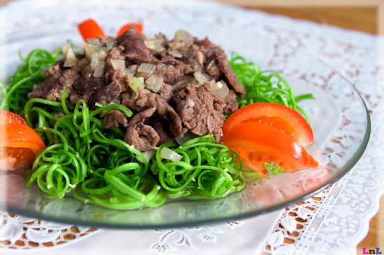

Nộm rau muống thịt bò

Nguyên Liệu:
- Rau muống chẻ nhỏ, nửa củ hành tây.
- Lạc rang nghiền nhỏ.
- Thịt bò 200g.
- Chanh ớt, đường, tỏi, mắm, bột canh, tiêu.
Cách làm:
Bước 1: Chuẩn bị nguyên liệu thực hiện chế biến món nộm rau muống thịt bò
- Rau muống: Chọn rau muống cạn thân nhỏ mướt, màu trắng sáng, thân mềm nhưng có độ dai giòn. Để cách làm món nộm rau muống thịt bò ngon, giòn
và không chát bạn nên rửa rau muống sạch rồi vặt bỏ lá, chẻ nhỏ và ngâm vào nước muối
- Lạc: Chọn mua lạc ngon, hạt nhỏ, chắc và đầy đặn, khi rang sẽ thơm và ăn có vị béo ngậy. Rang chín rồi nghiền nhỏ vừa ăn (tùy theo sở thích của bạn).
Để sẵn ra bát. Hành tây thái nhỏ dài, để sẵn.
- Thịt bò: Chọn thịt bò còn non có thớ thịt nhỏ mịn, màu tươi sáng, thịt không lạnh có độ đàn hồi tốt. Mua về để cả miếng rửa sạch rồi mới thái mỏng.
Ướp cùng với tỏi, 1 thìa cà phê mắm, 1 thìa cà phê đường, 1/2 cà phê tiêu. ướp khoảng 15 phút.
Bước 2: Thực hiện chế biến nộm rau muống thịt bò hấp dẫn
– Rau muống chẻ nhỏ để ráo nước và trộn đều cùng hỗn hợp chanh+đường+ớt nhỏ+hạt nêm+mắm. Lưu ý, khi trộn nộm hãy đeo găng tay và trộn thật nhẹ nhàng để món
nộm rau muống thịt bò được đậm đà và không nát nhé.
– Xào thịt bò: Cho tỏi vào chảo phi vàng rồi cho thịt bò vào xào nhanh tay, để lửa to, xào càng nhanh chín thịt bò càng mềm ngon nhé.
Xào gần chín thì cho hành tây vào đảo cùng. Nêm gia vị vừa ăn nhé.
Bước 3:
- Phần thịt bò đổ ra bát, bạn cho 1/2 phần lạc rang vào trộn đều lên. Phần còn lại cho vào rau muống đã ướp trộn đều lên. Rồi bày biện lên đĩa và thưởng thức khi thịt bò còn nóng.
Có thể trang trí thêm vài bông hoa hoặc con bướm làm bằng cà rốt cho sinh động nhé